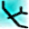
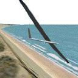
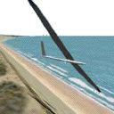
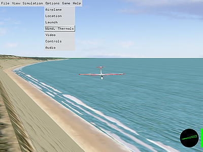

CRRCsim
Dieser Artikel wurde für die folgenden Ubuntu-Versionen getestet:
Ubuntu 14.04 Trusty Tahr
Zum Verständnis dieses Artikels sind folgende Seiten hilfreich:

CRRCsim  ist ein Modellflugsimulator. Er erlaubt auf sehr realistische und einfache Weise das Steuern eines Modellflugzeug zu erlernen, bzw. die eigenen Fähigkeiten zu erweitern. Die Modelle sind sehr naturgetreu gestaltet und alle Flugparameter werden anhand einer 3D-Gestaltung des Modells berechnet, wodurch beispielsweise Strömungsabrisse aerodynamisch korrekt dargestellt werden. Wichtige Eigenschaften der Software sind:

ist ein Modellflugsimulator. Er erlaubt auf sehr realistische und einfache Weise das Steuern eines Modellflugzeug zu erlernen, bzw. die eigenen Fähigkeiten zu erweitern. Die Modelle sind sehr naturgetreu gestaltet und alle Flugparameter werden anhand einer 3D-Gestaltung des Modells berechnet, wodurch beispielsweise Strömungsabrisse aerodynamisch korrekt dargestellt werden. Wichtige Eigenschaften der Software sind:

Open Source
3D-Ansicht des Flugmodells
Segelflug- und Motorflugmodelle
(auch Helikopter)Sehr realistische Grafik (3D-fähige Grafikkarte vorausgesetzt)
Steuerung der Modelle über eine RC-Fernsteuerung (über parallele Schnittstelle, serielle Schnittstelle via "FMS PIC"-Kabel oder über Audio-In), Joystick, Maus oder Keyboard
Erstellung eigener Flugmodelle ist möglich
weitere Punkte finden sich auf der http://sourceforge.net/apps/mediawiki/crrcsim/index.php?title=Development
Installation¶
Ab Ubuntu 14.04¶
Ab Ubuntu 14.04 Trusty Tahr ist CRRCsim über die Paketverwaltung verfügbar.
crrcsim (universe)
 mit apturl
mit apturl
Paketliste zum Kopieren:
sudo apt-get install crrcsim
sudo aptitude install crrcsim
Ältere Ubuntuversionen¶
Leider gibt es keine dauerhaft gepflegte Softwarequelle, in der jeweils aktuelle Pakete für verschiedene Ubuntuversionen bereitstehen. Daher bietet es sich an, das Spiel wie im Folgenden beschrieben selbst zu kompilieren.
Kompilieren aus dem Quellcode¶
Zum Kompilieren und zur Erfüllung nötiger Abhängigkeiten müssen zunächst die folgenden Pakete installiert [1] werden:
checkinstall (universe)
make
g++
libsdl1.2-dev
portaudio19-dev
libplib-dev (universe)
libjpeg62-dev
libplib1 (universe)
libboost-dev
libcgal-dev (universe)
mit apturl
Paketliste zum Kopieren:
sudo apt-get install checkinstall make g++ libsdl1.2-dev portaudio19-dev libplib-dev libjpeg62-dev libplib1 libboost-dev libcgal-dev
sudo aptitude install checkinstall make g++ libsdl1.2-dev portaudio19-dev libplib-dev libjpeg62-dev libplib1 libboost-dev libcgal-dev
Danach lädt man hier  die Quelldatei herunter und entpackt[2] diese in einen Ordner seiner Wahl.
die Quelldatei herunter und entpackt[2] diese in einen Ordner seiner Wahl.
Als nächstes wird das Programm wie üblich kompiliert[3] und installiert. Hilfe dazu gibt es auch auf der Wikiseite des Herstellers: Installieren unter Linux .
Das Spiel kann nun über crrcsim gestartet [5] werden.
Falls gewünscht kann noch ein Starter im Menü angelegt werden [6]. Das passende Icon gibt es hier .
{kind=link}
Installation weiterer Flugmodelle¶
Zur Installation weiterer Flugmodelle lädt man sich das Archiv crrcsim-models-addon mit den zusätzlichen Modellen herunter. Anschließend entpackt[2] man diese mit Root-Rechten[7] nach /usr/share/games/crrcsim, bzw. nach /usr/local/share/crrcsim bei manueller Installation.
Nach einem Neustart des Programms stehen die Modelle dann zur Verfügung und können unter "Options-> Airplane" ausgewählt werden.

Bedienung/Einstellungen¶
Die grundsätzliche Bedienung ist sehr einfach. Beim ersten Öffnen startet der Simulator auf dem "Davis Field" und das Modell wird automatisch per Handstart gestartet. Die Steuerung des Modells erfolgt mit der Maus. Wichtig ist dabei, dass sich der Mauszeiger innerhalb des Fensters befinden muss. Das Höhenruder wird durch Vor- und Zurückschieben, das Seiten- bzw. Querruder über Rechts- und Linksbewegung der Maus gesteuert.
Durch Drücken der Esc -Taste öffnet sich oben links die Menüleiste.
Wichtige Einstellungen können unter "Options" vorgenommen werden. Dazu gehören:
Die Auswahl des Flugmodells unter "Airplane"
Die Auswahl des Standorts unter "Location". Besonders interessant ist hier das Klippenfliegen im dynamischen Aufwind bei "Cape Cod"
Die Wahl der Startart (Handstart, Windenstart,...) unter "Launch"
Einstellungen zu Thermik und Wind unter "Wind, Thermals"
Einstellungen der Anzeige, des Sounds und vor allem des Steuerungsgeräts unter "Video", "Audio" und "Controls".
Genauere Beschreibungen zu den einzelnen Optionen findet man hier .
Sind Einstellungen vorgenommen worden, so wird beim Verlassen des Simulators gefragt, ob man die momentanen Einstellungen als Standard übernehmen will.
Tastenbelegung¶
| Tastenbelegung CRRCsim | |||||
| Taste | Befehl/Funktion | Taste | Befehl/Funktion | Taste | Befehl/Funktion |
| Esc | Menü anzeigen | Bild ↑ | Motorschub verstärken | R | Neustart der Simulation |
| P | Pause | Bild ↓ | Motorschub verringern | T | Trainingsmodus an/aus (Thermik sichtbar/unsichtbar) |
| U | Resume | Q | Spiel verlassen | D | Reset der Simulation und dann Pause/Neustart |
- Erstellt mit Inyoka
-
 2004 – 2017 ubuntuusers.de • Einige Rechte vorbehalten
2004 – 2017 ubuntuusers.de • Einige Rechte vorbehalten
Lizenz • Kontakt • Datenschutz • Impressum • Serverstatus -
Serverhousing gespendet von